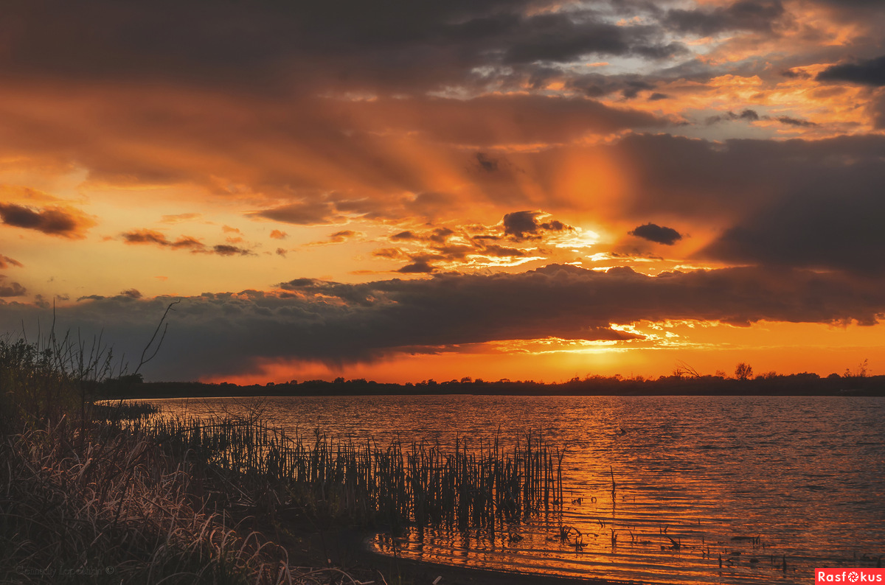
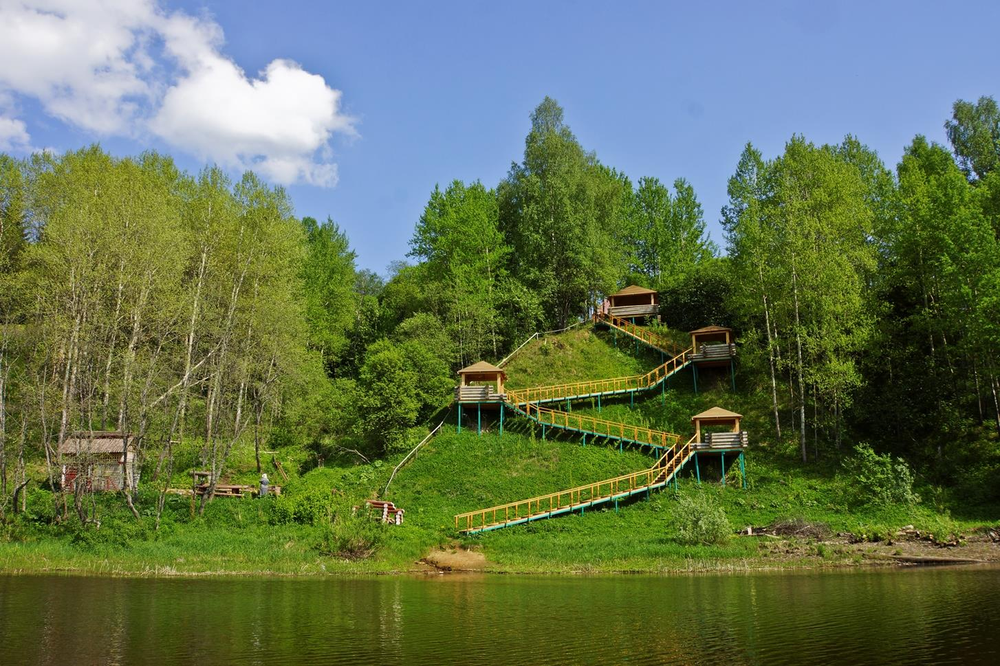
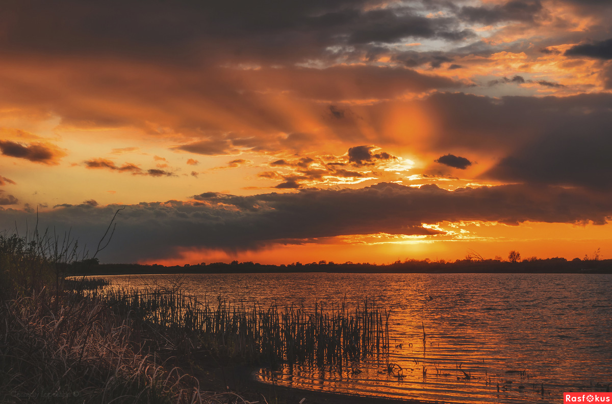
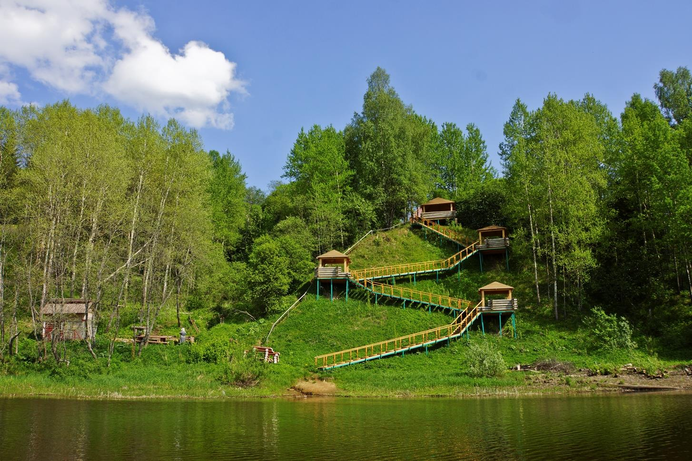
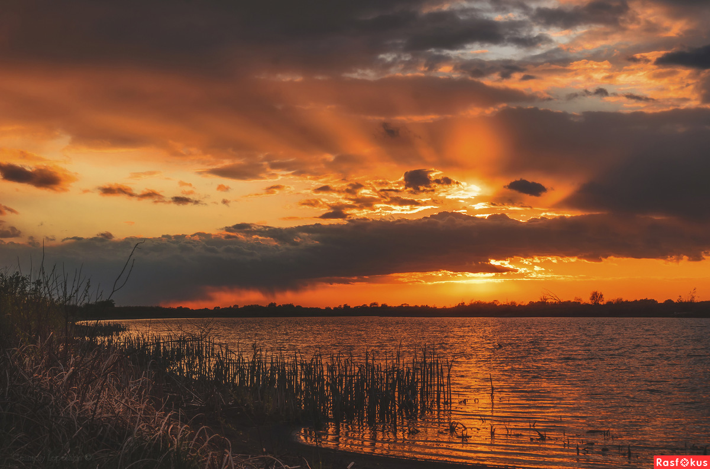
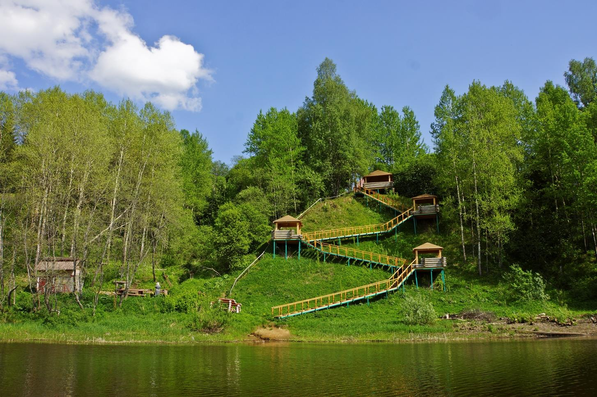
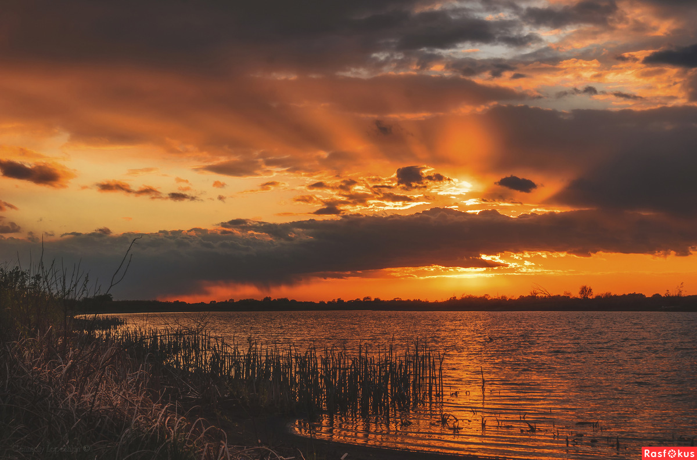
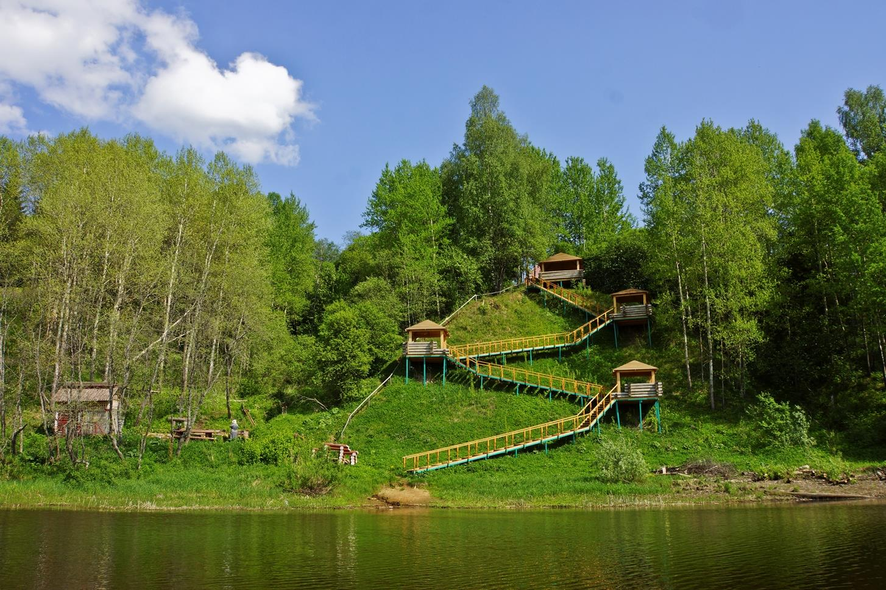

Мы все ищем место, где можно спрятаться и смотреть на жизнь издали
Дом на берегу Рыбинского водохранилища. Двухэтажный дом со всеми удобствами, уличной террасой и мангалом, с прекрасным видом на ледовую гладь водохранилища. Дом рассчитан для автономного размещения до 6 гостей: 3 человека на первом этаже и 3 человека на втором. На каждом этаже собственная кухня, санузел, великолепный вид на водохранилище и лес. Огороженная закрытая территория, видеонаблюдение, парковка, огромные просторы и всего 50 м до водохранилища. Подготовленный съезд для снегоходов, причал для лодок (в летний период) и возможность рыбачить практически не отходя от дома!
Дом расположен в д. Ножовники, Ярославской области на огороженной территории, на берегу пруда. Видеонаблюдение, парковка, детская площадка, мангал и даже есть домашний скот (куры, гуси, кролики, бычок). В самом доме большая гостиная на первом этаже и полностью оснащенная кухня, 4 номера, до 8 гостей. Демократичные цены и отличный вариант провести выходные! Неподалеку Рыбинское водохранилище, реки Сить и Чеснава, бескрайние снежные просторы и сказочный русский лес! Фермерские продукты и свежий воздух.
Для размещения гостям предлагаются двухместные и семейные номера в гостинице, где созданы все условия для комфортабельного проживания. На территории есть беседка с мангалом, казаном и коптильней, где желающие устраивают барбекю. Для активного времяпрепровождения в прокате есть квадроциклы для катания по ухабистым дорогам и снегоходы для покорения снежных троп. В аренду также можно взять катер. Для поклонников парных состязаний установлен бильярдный стол и аэрохоккей. А любители настольных игр, проводят досуг с шашками, шахматами или нардами. Двухэтажное отдельно стоящее здание – это баня с вместительной парилкой, бассейном, кухней и двумя комнатами отдыха. Тут отдыхающие поправляют здоровье, приводят тело в тонус, и просто расслабляются в душевной компании.